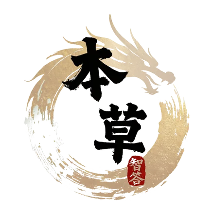

AI 小药童先带你认清体质，再从二十部岐黄经典里挑出与你相契的那一部——使用流程：拍照看面相作「望诊参考」，或答 9 题速测 / 27 题国标量表作「问诊」；两者四诊合参写入体质档案后，经典荐读按档案点亮契合书目，再翻开原文选段与白话译文。识体质 → 荐经典 → 读原文，三步即可开始。
先完成体质辨识，小药童据体质档案点亮契合书目，再翻开对应的原文选段与白话译文。下面四步依次进行，随时可以从任意一步开始。